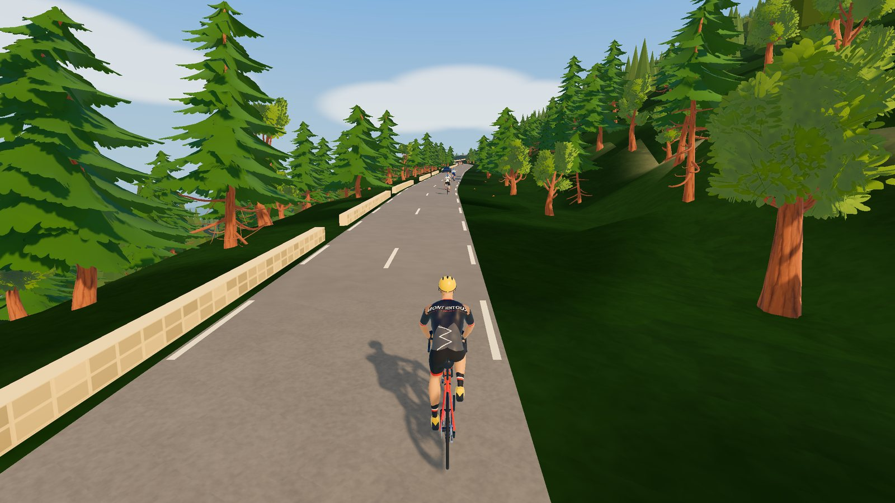
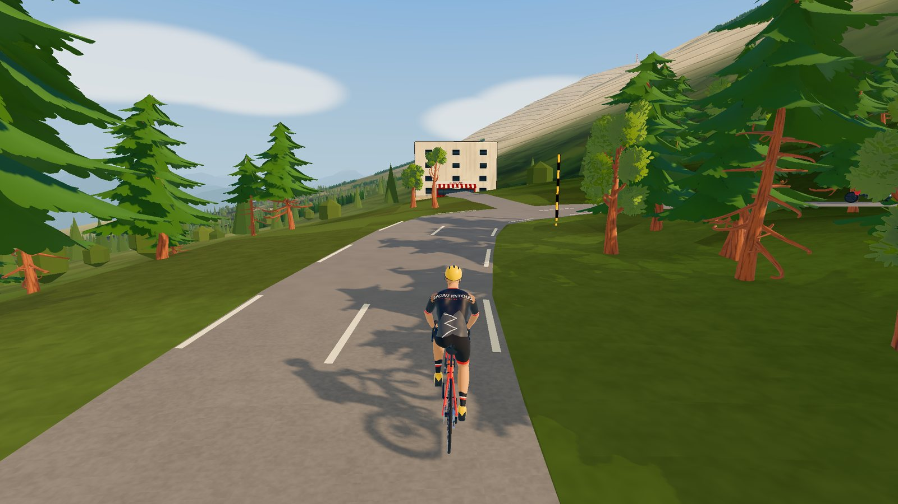

Les trois versants › Mont Ventoux par Malaucène
Mont Ventoux par Malaucène
La face nord. Plus irrégulière, plus sauvage, avec les rampes les plus raides du Géant et la station du Mont Serein à mi-chemin du ciel.
La face nord. Plus irrégulière, plus sauvage, avec les rampes les plus raides du Géant et la station du Mont Serein à mi-chemin du ciel.
Chaque barre est un kilomètre, colorée comme les bornes blanches et jaunes du bord de route : vert sous 3 %, jaune, orange, rouge, puis bordeaux au-delà de 10 %.

Au pied des Dentelles, on quitte Malaucène par la route du Groseau. Dès le deuxième kilomètre, près de la chapelle Notre-Dame-du-Groseau, la pente dépasse les 8 %.

Les pins et les hêtres de l'ubac alternent replats et rampes. Entre le 11e et le 13e kilomètre, la route aligne trois kilomètres à plus de 10 % : le passage le plus dur des trois versants.

La station de ski apparaît au détour d'un virage, avec ses chalets et ses remontées. Un court répit avant l'assaut final.

Au-dessus des arbres, la route grimpe en lacets dans le pierrier jusqu'à l'observatoire. La vue plonge sur la vallée du Toulourenc et, par temps clair, jusqu'aux Alpes.


La voie royale. Celle du Tour de France, de la forêt sans répit et du désert de pierres blanches. 21 kilomètres pour passer des vignes à 1 912 mètres.

La plus douce, la plus longue, la plus parfumée. Des champs de lavande du plateau d'Albion jusqu'au pierrier, à un rythme régulier… avant six derniers kilomètres qui ne pardonnent pas.